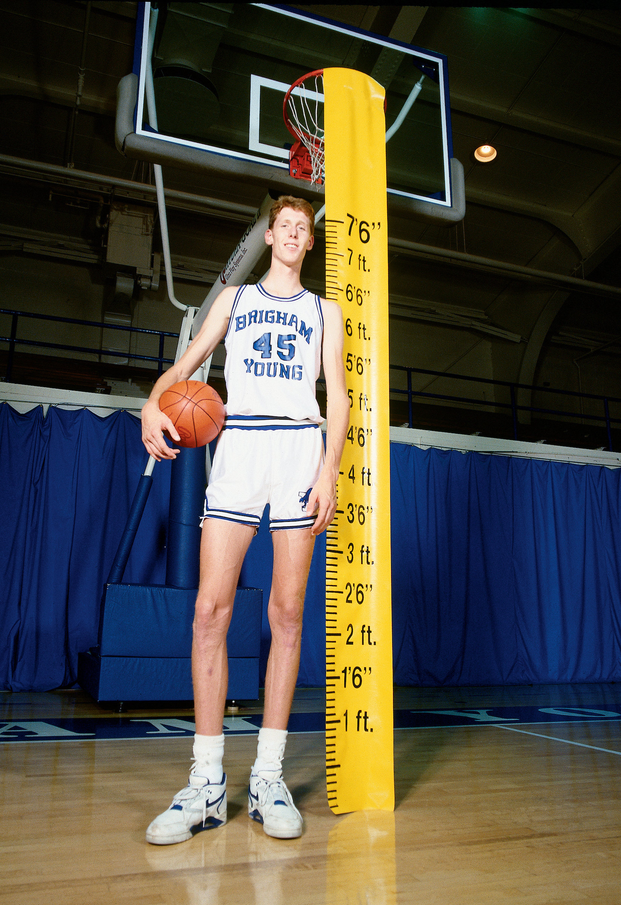

The Gender of Genetics in Basketball
In the world of professional basketball, height often seems synonymous with success. However, beneath the surface, there's an intriguing relationship between genetics, height, and gender that warrants exploration. In…